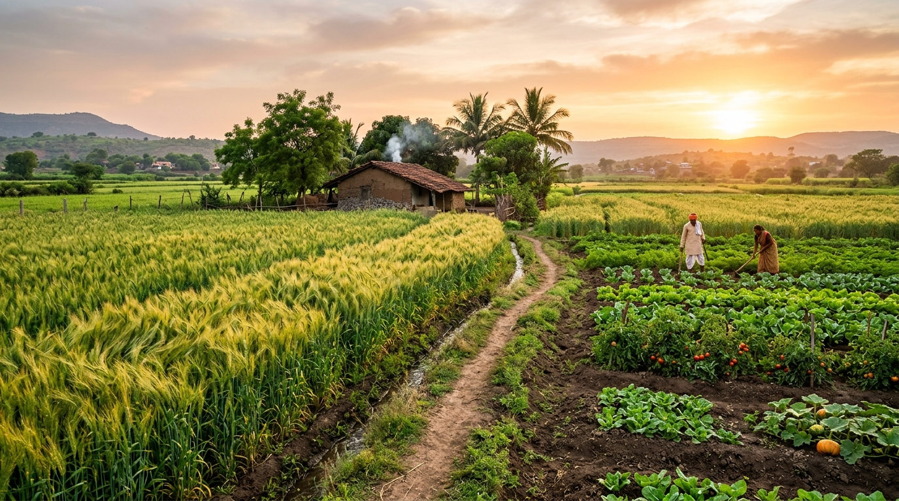

A legacy of trust, science, and service to Indian farmers

KisanMart was founded with one unwavering belief: Indian farmers deserve the finest organic nutrition for their land — without compromise. What began as a small cooperative in rural Uttar Pradesh has grown into a trusted name across 22 states.
Our products are developed in collaboration with agricultural scientists from leading universities. Every batch is tested for purity, potency, and safety before reaching your hands. We do not cut corners because your livelihood depends on what we deliver.
We believe that healthy soil creates healthy crops, healthy families, and a healthy nation. This conviction drives every decision we make — from sourcing raw materials to the final delivery at your door.
Explore Our ProductsEvery product we sell meets the highest national and international standards
National Programme for Organic Production — the highest organic standard in India, mandated by the government.
Every batch is tested in NABL-accredited laboratories for NPK content, heavy metals, and pathogen absence.
Our entire supply chain — from raw material sourcing to packaging — follows sustainable, zero-waste practices.
To make premium organic farming inputs accessible and affordable to every Indian farmer — from the smallest smallholder to the largest estate — and to build a future where chemical-free farming is the norm, not the exception.
Partner With Us